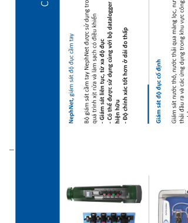
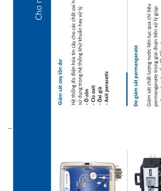
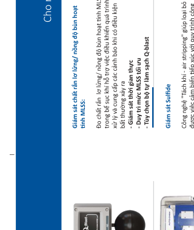
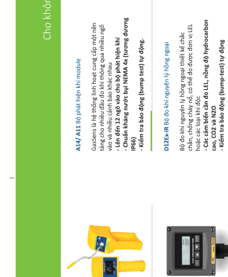
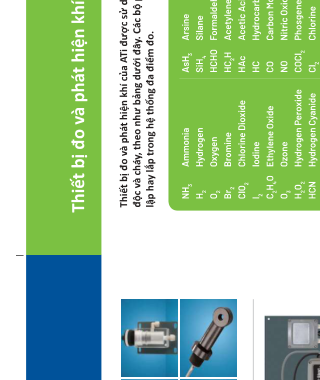

Q46H/62 Đo Clo Dư Tự Do
Thiết bị đo Clo dư liên tục không dùng thuốc thử hóa chất (reagent-free), chi phí vận hành siêu thấp.
0-200.0 ppb / ppm
Clo tự do / Tổng
AutoClean
Tất cả sản phẩm quang phổ trực tuyến s::can và các dòng phân tích nước cao cấp ATi nằm chung trong một cổng thông tin duy nhất, kèm brochure sách lật 3D tương tác sống động và trang chi tiết thông số kỹ thuật từng model.
Đo hấp thụ quang phổ toàn dải 190 - 750 nm trực tiếp trong dòng nước (in-situ), phân tích tức thì không cần thuốc thử hóa chất.
Hệ thống thổi khí áp lực định kỳ chống bám bẩn trên lăng kính quang học, thuật toán bù trừ độ đục đảm bảo vận hành ổn định 24/7.
Đo đồng thời COD, BOD, TOC, TSS, Nitrat, Clo, pH và truyền dữ liệu Modbus / IoT về SCADA và cổng thông tin Sở TN&MT.
Brochure của Analytical Technology, Inc. (ATi) được chuyển đổi thành cuốn sách 3D có thể lật trang, tích hợp trực tiếp các thiết bị đo thực tế. Bạn có thể bấm vào từng sản phẩm trên trang sách để xem bảng thông số hoặc gửi yêu cầu báo giá ngay lập tức.

Thiết bị đo Clo dư liên tục không dùng thuốc thử hóa chất (reagent-free), chi phí vận hành siêu thấp.
Giám sát Ozone hòa tan nồng độ siêu nhạy cho nước tinh khiết, dược phẩm, đồ uống và xử lý nước cao cấp.

Cảm biến quang học hoặc Galvanic đo DO bể hiếu khí Aerotank, kiểm soát quạt thổi khí tiết kiệm đến 40% điện năng.

Công nghệ điện cực vi sai (Differential pH Sensor) chống nghẹt dòng rò đất, độ bền gấp 3 lần điện cực thông thường.

Hệ thống phân tán gắn trên đường ống mạng lưới cấp nước đô thị. Đo tới 16 chỉ tiêu đồng thời bằng các mô-đun M-Node.

Quang học hồng ngoại 860nm tán xạ góc 90 độ theo chuẩn ISO 7027, buồng Bubble Trap loại bỏ bọt khí triệt để.
Đội ngũ chuyên gia kỹ thuật CPES sẵn sàng khảo sát thực tế, tư vấn chọn lựa giữa dòng s::can và ATi tối ưu nhất theo từng bài toán công nghệ và ngân sách của quý khách.